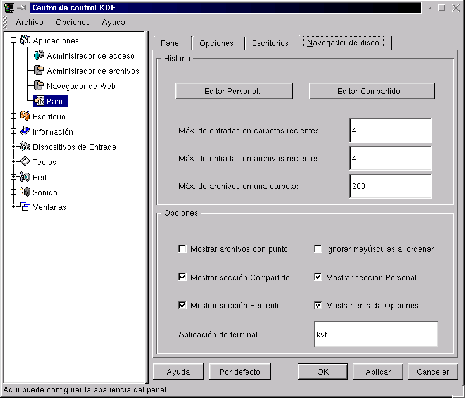

Next: Aplicaciones Preinstaladas
Up: Configuración de la Barra
Previous: Escritorios
Índice General
Figura 3.20:
Personalización de valores del Navegador de disco
|

|
El Navegador de disco es una característica bastante nueva en
KDE, su función es la de dar acceso rápido a los archivos y carpetas
del sistema sin tener la necesidad de acceder a ellos a través del
kfm3.7, sino que a través del Panel. Accediendo al botón
 del Panel, una de las opciones que se pueden observar en la
parte de abajo del menú es la categoría Navegador de disco,
dentro de esta, hay tres ``secciones'': Compartido, Personal y
Reciente, cuyas funciones son almacenar los elementos compartidos (es
decir, todos los usuarios lo pueden acceder, pero no pueden agregar
nada allí excepto el usuario root), los elementos personales
(éstos son exclusivos por cada usuario, y cada uno puede agregar sus
elementos sin problemas), y los elementos recientemente usados.
del Panel, una de las opciones que se pueden observar en la
parte de abajo del menú es la categoría Navegador de disco,
dentro de esta, hay tres ``secciones'': Compartido, Personal y
Reciente, cuyas funciones son almacenar los elementos compartidos (es
decir, todos los usuarios lo pueden acceder, pero no pueden agregar
nada allí excepto el usuario root), los elementos personales
(éstos son exclusivos por cada usuario, y cada uno puede agregar sus
elementos sin problemas), y los elementos recientemente usados.
En el Navegador de disco, las carpetas se representan como
categorías en el menú de opciones, por ejemplo si se observa en la
sección de Compartido, una de las categorías que se incluyen es
la de ``Root'', esto representa el directorio raíz del sistema de
archivos del GNU/Linux, entrando en esta categoría se podrá
``navegar'' a través de todo el sistema de archivos (siempre y cuando
se tengan permisos de acceso)
En el Centro de control KDE existen varias opciones para
configurar el Navegador de disco (ver figura
3.20),
distribuidas en dos cuadros, el primero de ellos, Historia
incluye las opciones que tienen que ver con el guardado de elementos
recientemente usados. El otro cuadro, Opciones, posee varios
puntos a seleccionar o deseleccionar, estos son:
- Mostrar archivos con punto:
- Si se habilita esta opción, se motrarán en el Navegador de
disco los archivos ``ocultos'' (los que tienen un nombre que comienza
con punto)
- Mostrar sección Compartido:
- Activa o desactiva la visualización de la sección Compartido en
el menú.
- Mostrar sección Reciente:
- Activa o desactiva la visualización de la sección Reciente en
el menú.
- Ignorar mayúsculas al ordenar:
- Generalmente cuando se ordenan los nombres de archivos y carpetas, los
nombres que comienzan con mayúsculas van antes que los demás, para
obtener un ordenamiento mas uniforme, se puede desactivar esta opción
y así no se tomarán en cuenta si las letras de los nombres son
mayúsculas o minúsculas.
- Mostrar sección Personal:
- Activa o desactiva la visualización de los elementos personalizados.
- Mostrar entrada Opciones:
- Si esta opción se desactiva, la sección Opciones no se mostrará
en el menú, esta opción sirve para configurar el Navegador de
disco y si se elimina esa opción del menú, siempre se puede llegar al
mismo punto a través del Centro de control KDE
- Aplicación de terminal:
- Estando en alguna de las categorías del Navegador de disco, se
puede observar que el primer ítem de la lista de elementos, tiene como
nombre ``Abrir Carpeta'' y si se hace click en dicho ítem, se
abrirá una ventana con el administrador de archivos en la carpeta de
la categoría donde se estaba.
Una opción que quizás no esté a la vista, es que si se mantiene
presionada la tecla  mientras se hace click en
``Abrir Carpeta'', en lugar de abrirse una ventana del administrador
de archivos kfm, lo que se abre es una ventana de terminal
de comandos situada en dicha carpeta. La opción Aplicación de
terminal lo que permite es personalizar la aplicación de terminal que
se abre al utilizar la característica anteriormente mencionada, por
defecto el KDE tiene configurada la aplicación kvt, pero
tranquilamente podría utilizarse la aplicación de terminal
konsole.
mientras se hace click en
``Abrir Carpeta'', en lugar de abrirse una ventana del administrador
de archivos kfm, lo que se abre es una ventana de terminal
de comandos situada en dicha carpeta. La opción Aplicación de
terminal lo que permite es personalizar la aplicación de terminal que
se abre al utilizar la característica anteriormente mencionada, por
defecto el KDE tiene configurada la aplicación kvt, pero
tranquilamente podría utilizarse la aplicación de terminal
konsole.
Next: Aplicaciones Preinstaladas
Up: Configuración de la Barra
Previous: Escritorios
Índice General
Proyecto Cursos - LuCAS - http://lucas.hispalinux.es/htmls/cursos.html